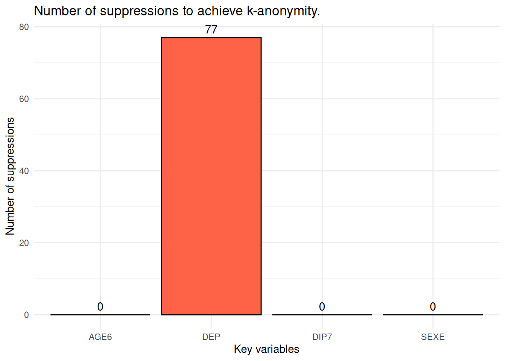

Attaching package: 'dplyr'The following objects are masked from 'package:stats':
filter, lagThe following objects are masked from 'package:base':
intersect, setdiff, setequal, unionInsee, Département des Méthodes Statistiques
Pour reproduire les résultats et réaliser les exercices, il est possible de travailler directement sur le datalab de l’Insee. Si vous disposez d’un compte, vous pouvez Ouvrir un service RStudio ou Ouvrir un service vscode R-Python, à votre convenance. Ces services installeront automatiquement les packages nécessaires pour réaliser les exercices de l’ensemble des fiches pratiques.
Pour installer les packages nécessaires, vous trouverez les instructions à suivre dans la fiche Ressources / Installer les packages et les outils sur R.
Attaching package: 'dplyr'The following objects are masked from 'package:stats':
filter, lagThe following objects are masked from 'package:base':
intersect, setdiff, setequal, union REG DEP ARR SEXE AGE AGE6 ACTEU DIP7 PCS1Q ANCCHOM HHID
<fctr> <fctr> <fctr> <fctr> <int> <fctr> <fctr> <fctr> <fctr> <fctr> <int>
1: 28 76 761 1 53 50 1 4 30 99 3558
2: 28 76 761 2 43 25 1 7 52 99 3558
3: 28 76 761 2 17 15 3 5 99 99 3558
4: 28 76 761 1 17 15 3 4 99 99 3558
5: 11 92 922 1 42 25 1 7 62 99 5973
6: 11 92 922 2 54 50 1 7 62 99 5973
HH_TAILLE HH_AGE HH_DIP HH_PCS IS_CHOM
<fctr> <fctr> <fctr> <fctr> <int>
1: 4 53 4 30 0
2: 4 53 4 30 0
3: 4 53 4 30 0
4: 4 53 4 30 0
5: 2 54 7 62 0
6: 2 54 7 62 0Pour plus d’informations sur les données, on pourra se reporter à la fiche “Présentation des données”.
REG DEP ARR SEXE AGE AGE6 ACTEU DIP7 PCS1Q ANCCHOM HHID
<fctr> <fctr> <fctr> <fctr> <int> <fctr> <fctr> <fctr> <fctr> <fctr> <int>
1: 28 76 761 1 53 50 1 4 30 99 3558
2: 28 76 761 2 43 25 1 7 52 99 3558
3: 28 76 761 2 17 15 3 5 99 99 3558
4: 28 76 761 1 17 15 3 4 99 99 3558
5: 11 92 922 1 42 25 1 7 62 99 5973
6: 11 92 922 2 54 50 1 7 62 99 5973
HH_TAILLE HH_AGE HH_DIP HH_PCS IS_CHOM
<fctr> <fctr> <fctr> <fctr> <int>
1: 4 53 4 30 0
2: 4 53 4 30 0
3: 4 53 4 30 0
4: 4 53 4 30 0
5: 2 54 7 62 0
6: 2 54 7 62 0
--------------------------6687 obs. violate 2-anonymity 13587 obs. violate 3-anonymity --------------------------Le fichier n’est pas 2-anonyme pour 6 687 observations. Ce sont 13 587 qui ne sont pas 3-anonyme.
Ici, fk = Fk puisqu’il n’y a pas de poids.
[1] 6687[1] 13587On retrouve le même nombre d’observations qu’avec le k-anonymat.
Suppression locale pour atteindre le k-anonymat avec localSuppression():
- obj : un objet de classe sdcMicroObj ou un dataframe - k : le seuil de k-anonymat, par défaut k = 2 - importance : vecteur numérique qui représente l’importance des variables qui sont utilisées pour obtenir le k-anonymat. Les variables dont l’importance vaut 1 seront, dans la mesure du possible, conservées - combs : vecteur numérique qui précise le nombre de variables par combinaison pour lesquelles on veut atteindre le k-anonymat.
Dans un premier temps on essaye d’obtenir un fichier 2-anonyme pour ces variables quasi-identifiantes : AGE,SEXE,DEP,DIP7.
-----------------------
Total number of suppressions in the key variables: 6687 (new: 6687)
Number of suppressions by key variables:
(in parenthesis, the total number suppressions is shown) AGE SEXE DEP DIP7
1 6672 (6672) 0 (0) 15 (15) 0 (0)
2-anonymity == TRUE
-----------------------En supprimant 6687 observations on btient un fichier 2-anonyme.
L’algorithme a choisi de supprimer l’âge de 6672 individus. Le département de résidence de 15 individus est aussi supprimé.
AGE SEXE DEP DIP7
1 53 1 76 4
2 43 2 76 7
3 NA 2 76 5
4 17 1 76 4
5 42 1 92 7
6 54 2 92 7On voit par exemple, que l’âge du troisième individus été supprimé.
La première tentative de suppression peut ne pas convenir car elle supprime beaucoup d’informations. On procède donc à un recodage de la variable d’âge en 6 classes.
Cette fois-ci on commence par créer un objet sdcMicro (mais on pouvait aussi faire la suppression locale directement à partir du dataframe comme dans l’exemple précédent).
Infos on 2/3-Anonymity:
Number of observations violating
- 2-anonymity: 77 (0.226%)
- 3-anonymity: 267 (0.784%)
- 5-anonymity: 825 (2.423%)
----------------------------------------------------------------------En discrétisant l’âge en 6 catégories, il n’y a plus que 77 observations qui ne sont pas 2-anonyme, et 267 qui ne sont pas 3-anonyme.
Pour atteindre le 2-anonymat, l’algorithme a choisi de supprimer les départements de 77 individus. Donc, on supprime des modalités d’une seule variable et moins de cellules. Ce n’est pas surprenant puisque le fichier original contenait moins d’individus qui ne respectaient pas les 2-anonymat.
On peut essayer de reproduire un graphe proche de celui créé automatiquement quand on utilise un dataframe en entrée.
# Extraire les variables manipulées après suppression
suppressed <- get.sdcMicroObj(sdc_AGE6, type = "manipKeyVars")
# Calculer le nombre de suppressions (NA) par variable
supp_counts <- colSums(is.na(as.data.frame(suppressed)))
# Convertir en data.frame pour ggplot2
df_supp <- data.frame(
variable = names(supp_counts),
n_suppressions = as.numeric(supp_counts)
)
# Histogramme ggplot
ggplot(df_supp, aes(x = variable, y = n_suppressions)) +
geom_bar(stat = "identity", fill = "tomato", color = "black") +
geom_text(aes(label = n_suppressions), vjust = -0.5, size = 4) +
labs(
title = "Number of suppressions to achieve k-anonymity.",
x = "Key variables",
y = "Number of suppressions"
) +
theme_minimal()
On peut récupérer les données modifiées.
REG DEP ARR SEXE AGE AGE6 ACTEU DIP7 PCS1Q ANCCHOM HHID HH_TAILLE HH_AGE
1 76 <NA> 822 2 61 50 1 6 52 99 5093 2 61
2 76 <NA> 653 1 57 50 1 6 40 99 2533 2 57
3 28 <NA> 613 2 73 65 3 1 99 99 2470 1 73
4 76 <NA> 121 2 19 15 1 5 52 99 236 2 36
5 76 <NA> 663 1 19 15 1 1 30 99 2575 3 56
6 76 <NA> 113 1 23 15 3 7 99 99 182 3 36
HH_DIP HH_PCS IS_CHOM
1 6 52 0
2 6 40 0
3 1 99 0
4 3 51 0
5 4 61 0
6 3 40 0On peut regarder les croisements de quasi-identifiants pour lesquels il n’y a plus d’information sur le département.
# A tibble: 34 × 4
AGE6 SEXE DIP7 nb_ind
<fct> <fct> <fct> <int>
1 15 1 1 3
2 15 1 2 3
3 15 1 3 2
4 15 1 5 1
5 15 1 6 2
6 15 1 7 1
7 15 1 9 2
8 15 2 1 4
9 15 2 2 2
10 15 2 3 2
# ℹ 24 more rowsPeut-être que pour la publication prévue, l’information du département était très importante. Dans ce cas-là on peut préciser que nous souhaitons protéger la variable département dans la mesure du possible.
Ici, l’algorithme propose une autre solution qui permet de supprimer uniquement 2 départements. Cependant, en faisant cela il supprime des cellules dans chacune des variables.
Parmi les 4 variables quasi-identifiantes on peut décider que le diplôme est la variable la moins importante à conserver.
Dans ce cas-là, l’algorithme supprime le diplôme pour 73 individus. AGE, SEXE et DEP sont aussi touchés par des suppressions mais celles-ci sont très faibles.
On peut aussi vouloir des niveaux de k-anonymat différents selon le nombre de quasi-identifiants.
Par exemple, on souhaite avoir du 2-anonymat pour les combinaisons de 4 quasi-identifiants, 3-anonymat pour les combinaisons de 3 quasi-identifiants.
Pour obtenir un fichier qui respecte ces deux règles de k-anonymat il faut supprimer plus de cellules : - le département de 87 individus - le diplôme de 2 individus
---
title: Appliquer la suppression locale
href: pratique/fiches/suppression-locale.html
---
::: {.callout-tip}
# Pour s'exercer
Pour reproduire les résultats et réaliser les exercices, il est possible de travailler
directement sur le [`datalab` de l'Insee](datalab.sspcloud.fr). Si vous disposez d'un compte, vous pouvez [Ouvrir un service RStudio](https://datalab.sspcloud.fr/launcher/ide/rstudio?name=rstudio-formation-protection&version=2.3.1&s3=region-ec97c721&init.personalInit=«https%3A%2F%2Fraw.githubusercontent.com%2FInseeFrLab%2Fformation_protection_donnees%2Frefs%2Fheads%2Fmain%2Finit-scripts%2Frstudio.sh») ou [Ouvrir un service vscode R-Python](https://datalab.sspcloud.fr/launcher/ide/vscode-r-python-julia?name=vscode-formation-protection&version=2.3.5&s3=region-ec97c721&init.personalInit=«https%3A%2F%2Fraw.githubusercontent.com%2FInseeFrLab%2Fformation_protection_donnees%2Frefs%2Fheads%2Fmain%2Finit-scripts%2Fvscode-r-python.sh»), à votre convenance. Ces services installeront automatiquement les packages
nécessaires pour réaliser les exercices de l'ensemble des fiches pratiques.
:::
# En pratique
Pour installer les packages nécessaires, vous trouverez les instructions à suivre
dans la fiche [Ressources / Installer les packages et les outils sur R](../../ressources/fiches/outils-install.html).
## Les packages
```{r}
#| echo: false
library(readr)
library(purrr)
library(dplyr)
library(sdcMicro)
library(ggplot2)
```
## Les données
```{r}
source("../R/fun_import_data.R")
lfs_2023 <- import_lfs()
```
```{r}
head(lfs_2023)
```
Pour plus d'informations sur les données, on pourra se reporter à la fiche
["Présentation des données"](description-data.html).
```{r}
lfs_2023 %>% head()
```
## Etude du risque
```{r}
key_vars <- c("AGE","SEXE","DEP","DIP7")
```
```{r}
f <- freqCalc(lfs_2023, keyVars = key_vars)
f
```
Le fichier n'est pas 2-anonyme pour 6 687 observations. Ce sont 13 587 qui ne sont pas 3-anonyme.
```{r}
f$fk %>% head()
f$Fk %>% head()
```
Ici, fk = Fk puisqu'il n'y a pas de poids.
```{r}
indivf <- indivRisk(f)
length(indivf$rk[indivf$rk > 0.5])
length(indivf$rk[indivf$rk >= 0.5])
```
On retrouve le même nombre d'observations qu'avec le k-anonymat.
## Suppression locale
Suppression locale pour atteindre le k-anonymat avec `localSuppression()`:
- `obj` : un objet de classe sdcMicroObj ou un dataframe
- `k` : le seuil de k-anonymat, par défaut k = 2
- `importance` : vecteur numérique qui représente l'importance des variables qui sont utilisées pour obtenir le k-anonymat. Les variables dont l'importance vaut 1 seront, dans la mesure du possible, conservées
- `combs` : vecteur numérique qui précise le nombre de variables par combinaison pour lesquelles on veut atteindre le k-anonymat.
### Première tentative
Dans un premier temps on essaye d'obtenir un fichier 2-anonyme pour ces variables quasi-identifiantes : `AGE`,`SEXE`,`DEP`,`DIP7`.
```{r}
localS_initiale <- localSuppression(lfs_2023,
k = 2,
keyVar = key_vars)
```
```{r}
localS_initiale
```
En supprimant 6687 observations on btient un fichier 2-anonyme.
```{r}
plot(localS_initiale)
```
L'algorithme a choisi de supprimer l'âge de 6672 individus. Le département de résidence de 15 individus est aussi supprimé.
```{r}
head(localS_initiale$xAnon)
```
On voit par exemple, que l'âge du troisième individus été supprimé.
### L'âge en classes
La première tentative de suppression peut ne pas convenir car elle supprime beaucoup d'informations. On procède donc à un recodage de la variable d'âge en 6 classes.
Cette fois-ci on commence par créer un objet sdcMicro (mais on pouvait aussi faire la suppression locale directement à partir du dataframe comme dans l'exemple précédent).
```{r}
sdc_AGE6 <- createSdcObj(lfs_2023,
keyVars = c("AGE6","SEXE","DEP","DIP7"))
```
```{r}
print(sdc_AGE6, 'kAnon')
```
En discrétisant l'âge en 6 catégories, il n'y a plus que 77 observations qui ne sont pas 2-anonyme, et 267 qui ne sont pas 3-anonyme.
```{r}
sdc_AGE6 <- localSuppression(sdc_AGE6, k = 2)
```
```{r}
print(sdc_AGE6@localSuppression$totalSupps)
```
Pour atteindre le 2-anonymat, l'algorithme a choisi de supprimer les départements de 77 individus. Donc, on supprime des modalités d'une seule variable et moins de cellules. Ce n'est pas surprenant puisque le fichier original contenait moins d'individus qui ne respectaient pas les 2-anonymat.
On peut essayer de reproduire un graphe proche de celui créé automatiquement quand on utilise un dataframe en entrée.
```{r}
# Extraire les variables manipulées après suppression
suppressed <- get.sdcMicroObj(sdc_AGE6, type = "manipKeyVars")
# Calculer le nombre de suppressions (NA) par variable
supp_counts <- colSums(is.na(as.data.frame(suppressed)))
# Convertir en data.frame pour ggplot2
df_supp <- data.frame(
variable = names(supp_counts),
n_suppressions = as.numeric(supp_counts)
)
# Histogramme ggplot
ggplot(df_supp, aes(x = variable, y = n_suppressions)) +
geom_bar(stat = "identity", fill = "tomato", color = "black") +
geom_text(aes(label = n_suppressions), vjust = -0.5, size = 4) +
labs(
title = "Number of suppressions to achieve k-anonymity.",
x = "Key variables",
y = "Number of suppressions"
) +
theme_minimal()
```
On peut récupérer les données modifiées.
```{r}
donnees_ls_AGE6 <- extractManipData(sdc_AGE6)
head(donnees_ls_AGE6 %>% filter(is.na(DEP)))
```
On peut regarder les croisements de quasi-identifiants pour lesquels il n'y a plus d'information sur le département.
```{r}
donnees_ls_AGE6 %>%
filter(is.na(DEP)) %>%
group_by(AGE6, SEXE, DIP7) %>%
summarise(nb_ind = n(), .groups = "drop")
```
### Prioriser des variables
Peut-être que pour la publication prévue, l'information du département était très importante. Dans ce cas-là on peut préciser que nous souhaitons protéger la variable département dans la mesure du possible.
```{r}
sdc_AGE6 <- undolast(sdc_AGE6) # annule la dernière suppression locale
sdc_AGE6 <- localSuppression(sdc_AGE6,
k = 2,
importance = c(4,3,1,2))
```
```{r}
sdc_AGE6@localSuppression$totalSupps
```
Ici, l'algorithme propose une autre solution qui permet de supprimer uniquement 2 départements. Cependant, en faisant cela il supprime des cellules dans chacune des variables.
Parmi les 4 variables quasi-identifiantes on peut décider que le diplôme est la variable la moins importante à conserver.
```{r}
sdc_AGE6 <- undolast(sdc_AGE6) # annule la dernière suppression locale
sdc_AGE6 <- localSuppression(sdc_AGE6,
k = 2,
importance = c(1,1,1,4))
```
```{r}
sdc_AGE6@localSuppression$totalSupps
```
Dans ce cas-là, l'algorithme supprime le diplôme pour 73 individus. AGE, SEXE et DEP sont aussi touchés par des suppressions mais celles-ci sont très faibles.
### k-anonymat pour des sous-groupes de quasi-identifiants
On peut aussi vouloir des niveaux de k-anonymat différents selon le nombre de quasi-identifiants.
Par exemple, on souhaite avoir du 2-anonymat pour les combinaisons de 4 quasi-identifiants, 3-anonymat pour les combinaisons de 3 quasi-identifiants.
```{r}
sdc_AGE6 <- undolast(sdc_AGE6) # annule la dernière suppression locale
combinaisons <- c(4,3)
niv_k <- c(2,3)
sdc_AGE6 <- localSuppression(sdc_AGE6,
k = niv_k,
combs = combinaisons)
```
```{r}
sdc_AGE6@localSuppression$totalSupps
```
Pour obtenir un fichier qui respecte ces deux règles de k-anonymat il faut supprimer plus de cellules :
- le département de 87 individus
- le diplôme de 2 individus